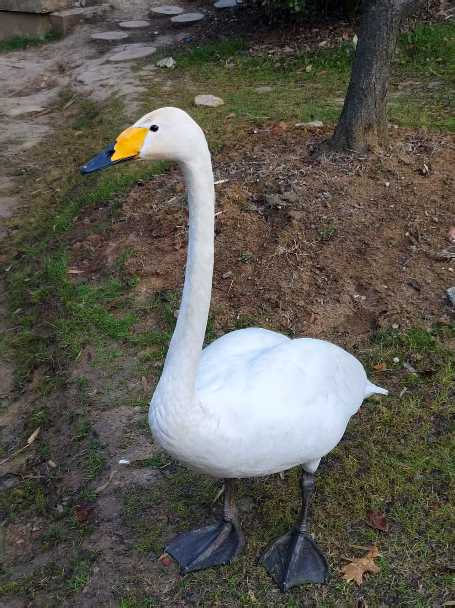

|
Sicheng Yang
Previously, I received my B.Eng. degree in Computer Science from Xi'an Jiaotong University, where I was advised by
Prof. Minnan Luo in the
Luo Lab Undergraduate Division (LUD).
Email: syang671@connect.hkust-gz.edu.cn, yscript@stu.xjtu.edu.cn, ysc2216113587@gmail.com
My research area is Medical Image Analysis, Large Language Models, etc.
Google Scholar /
Github
|

|
|
|
|
|
Xi'an Jiaotong University
B.E. in Computer Science • 2021.09 - 2025.06
Advisors: Prof. Minnan Luo, Prof. Yan Yang
|
|
|
CoC: Chain-of-Cancer based on Cross-Modal Autoregressive Traction for Survival Prediction
Haipeng Zhou, Sicheng Yang, Sihan Yang, Jing Qin, Lei Chen, Lei Zhu
International Conference on Medical Image Computing and Computer-Assisted Intervention, MICCAI 2025 (Early Accept)
|
|
|
A Gesture Recognition System Using Electrical Impedance Tomography with Improved Electrode Layout and Classification Techniques
Sen Wang, Tingting Zhang, Sicheng Yang, Ruoyu Liu, Borun Li, Jian Wang, De-Wen Zhang, Zhibin Zhao
IEEE Transactions on Instrumentation and Measurement, IEEE TIM 2025
|
|
|
CytoGAN: Unpaired staining transfer by structure preservation for cytopathology image analysis
Ruijie Wang, Sicheng Yang, Qiling Li, Dexing Zhong
Computers in Biology and Medicine, CBM 2024
|
|
|
Cross-conditioned Diffusion Model for medical image-to-image translation
Zhaohu Xing, Sicheng Yang, Sixiang Chen, Tian Ye, Lei Zhu
International Conference on Medical Image Computing and Computer-Assisted Intervention, MICCAI 2024
|
Last updated on 2025.08.31
This awesome template borrowed from here.
|
|